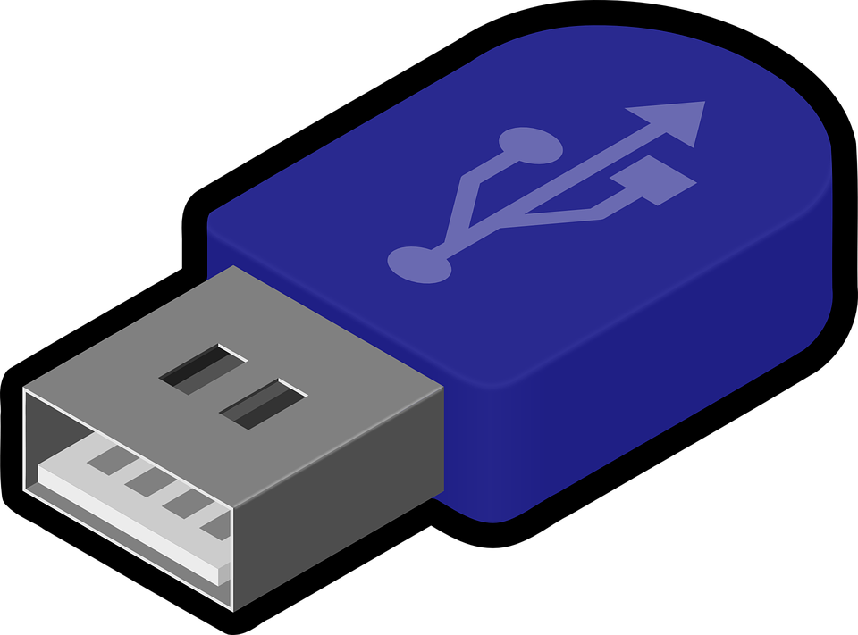

Fysieke laag
De fysieke laag heeft als belangrijkste functie het omgaan met de fysieke aspecten van gegevensoverdracht en communicatie. Het is het onderste niveau van het OSI-model voor netwerkregelingen en houdt zich bezig met het verzenden en ontvangen van rauwe bits, signalen of golven over fysieke media. Een paar van de belangrijkste functies van de fysieke laag zijn:
Signaaloverdracht:
De fysieke laag is verantwoordelijk voor het omzetten van digitale gegevens in fysieke signalen die kunnen worden verzonden via het gebruikte overdrachtsmedium. Dit kan bijvoorbeeld radiogolven in draadloze communicatie zijn.
Fysieke media en connectoren:
Het definieert de specificaties van de gebruikte fysieke media, zoals eigenschappen van kabels, vezels of draadloze frequenties. Bovendien bevat het de fysieke connectors en aansluitingen die worden gebruikt om apparaten op het netwerk aan te sluiten, bijvoorbeeld USB-poorten.

Modulatie en demodulatie:
In draadloze communicatie verzendt de fysieke laag gegevens door de draaggolf te moduleren, wijzigen, op een manier die de informatie draagt. Bij ontvangst demoduleert het de draaggolf om de oorspronkelijke digitale gegevens te herstellen.
Snelheid en bandbreedte:
Het bepaalt de gegevensoverdrachtsnelheid (bits per seconde) en de beschikbare bandbreedte voor communicatie. Dit varieert afhankelijk van het gebruikte medium en de technologie.
Ruis en signaalkwaliteit:
De fysieke laag stuurt problemen met betrekking tot signaalverlies, ruis, interferentie en signaalkwaliteit om ervoor te zorgen dat gegevens nauwkeurig worden overgedragen en ontvangen.
Handshaking en synchronisatie:
Het regelt mechanismen voor het synchroniseren van zenders en ontvangers en voor het tot stand brengen van communicatieverbindingen, handshaking, tussen apparaten.
RAM- en ROM-geheugen:
RAM (Random Access Memory) is een tijdelijk geheugen dat wordt gebruikt om actieve programma's en gegevens in op te slaan, zodat de processor er snel toegang tot heeft. Het is vluchtig, dat betekent dat de opgeslagen gegevens verloren gaan wanneer de stroom wordt uitgeschakeld. ROM (Read-Only Memory) bevat permanente gegevens die niet veranderbaar zijn tijdens normaal gebruik. Het wordt gebruikt voor het opslaan van firmware en basissysteeminformatie die nodig is om een computer of ander elektronisch apparaat op te starten.
De fysieke laag vormt de basis voor alle bovenliggende lagen in het OSI-model die verantwoordelijk zijn voor hogere niveaus van gegevensverwerking en communicatie. Kortom, de fysieke laag is cruciaal voor het mogelijk maken van communicatie tussen apparaten en netwerken door de fysieke aspecten van gegevensoverdracht te beheren.